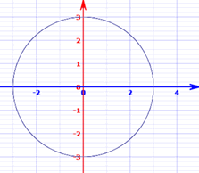

Implicit Differentiation
Finding the derivative when you can’t solve for y
You may like to read Introduction to Derivatives and Derivative Rules first.
Implicit vs Explicit
A function can be explicit or implicit:
Explicit: "y = some function of x". When we know x we can calculate y directly.
Implicit: "some function of y and x equals something else". Knowing x does not lead directly to y.
Example: A Circle
| Explicit Form | Implicit Form | |
| y = ± √ (r2 − x2) | x2 + y2 = r2 | |
| In this form, y is expressed as a function of x. |
In this form, the function is expressed in terms of both y and x. |

The graph of x2 + y2 = 32
How to do Implicit Differentiation
- Differentiate with respect to x
- Collect all the dy dx on one side
- Solve for dy dx
Example: x2 + y2 = r2
Differentiate with respect to x:
d dx (x2) + d dx (y2) = d dx (r2)
Let's solve each term:
Which gives us:
2x + 2y dy dx = 0
Collect all the dy dx on one side
y dy dx = −x
Solve for dy dx :
dy dx = −x y
The Chain Rule Using dy dx
Let's look more closely at how d dx (y2) becomes 2y dy dx
The Chain Rule says:
du dx = du dy dy dx
Substitute in u = y2:
d dx (y2) = d dy (y2) dy dx
And then:
d dx (y2) = 2y dy dx
Basically, all we did was differentiate with respect to y and multiply by dy dx
Another common notation is to use ’ to mean d dx
The Chain Rule Using ’
The Chain Rule can also be written using ’ notation:
f(g(x))’ = f’(g(x))g’(x)
g(x) is our function "y", so:
f(y)’ = f’(y)y’
f(y) = y2, so f’(y) = 2y:
f(y)’ = 2yy’
or alternatively: f(y)’ = 2y dy dx
Again, all we did was differentiate with respect to y and multiply by dy dx
Explicit
Let's also find the derivative using the explicit form of the equation.
- To solve this explicitly, we can solve the equation for y
- Then differentiate
- Then substitute the equation for y again
Example: x2 + y2 = r2
We get the same result this way!
You can try taking the derivative of the negative term yourself.
Chain Rule Again!
Yes, we used the Chain Rule again. Like this (note different letters, but same rule):
dy dx = dy df df dx
Substitute in f = (r2 − x2):
d dx (f½) = d df (f½) d dx (r2 − x2)
Derivatives:
d dx (f½) = ½(f−½) (−2x)
And substitute back f = (r2 − x2):
d dx (r2 − x2)½ = ½((r2 − x2)−½) (−2x)
And we simplified from there.
Using The Derivative
OK, so why find the derivative y’ = −x/y ?
Well, for example, we can find the slope of a tangent line.
Example: what is the slope of a circle centered at the origin with a radius of 5 at the point (3, 4)?

No problem, just substitute it into our equation:
dy dx = −x/y
dy dx = −3/4
And for bonus, the equation for the tangent line is:
y = −3/4 x + 25/4
Another Example
Sometimes the implicit way works where the explicit way is hard or impossible.
Example: 10x4 − 18xy2 + 10y3 = 48
How do we solve for y? We don't have to!
- First, differentiate with respect to x (use the Product Rule for the xy2 term).
- Then move all dy/dx terms to the left side.
- Solve for dy/dx
Like this:
(the middle term is explained
in "Product Rule" below)
And we get:
Product Rule
For the middle term we used the Product Rule: (fg)’ = f g’ + f’ g
Because (y2)’ = 2y dy dx (we worked that out in a previous example)
Oh, and dxdx = 1, in other words x’ = 1
Inverse Functions
Implicit differentiation can help us solve inverse functions.
The general pattern is:
- Start with the inverse equation in explicit form. Example: y = sin−1(x)
- Rewrite it in non-inverse mode: Example: x = sin(y)
- Differentiate this function with respect to x on both sides.
- Solve for dy/dx
As a final step we can try to simplify more by substituting the original equation.
An example will help:
Example: the inverse sine function y = sin−1(x)
We can also go one step further using the Pythagorean identity:
sin2 y + cos2 y = 1
cos y = √(1 − sin2 y )
And, because sin(y) = x (from above!), we get:
cos y = √(1 − x2)
Which leads to:
dy dx = 1 √(1 − x2)
Example: the derivative of square root √x
Note: this is the same answer we get using the Power Rule:
Summary
- To Implicitly derive a function (useful when a function can't easily be solved for y)
- Differentiate with respect to x
- Collect all the dy/dx on one side
- Solve for dy/dx
- To derive an inverse function, restate it without the inverse then use Implicit differentiation